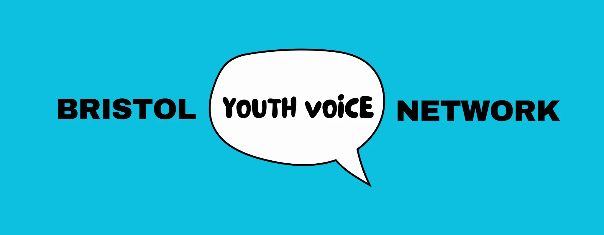
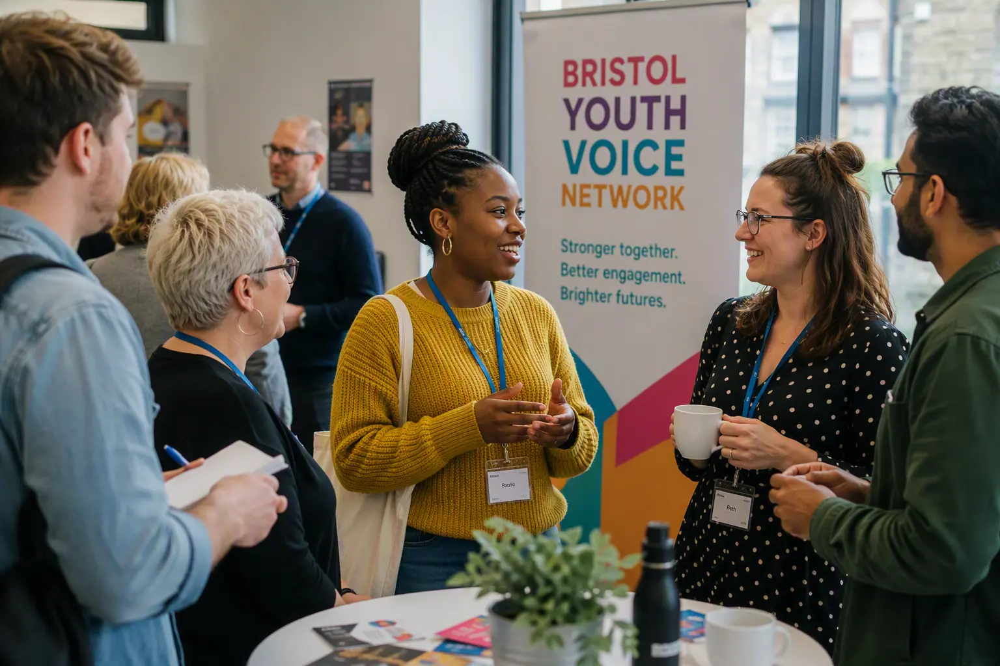

Why
the Network Exists
The Bristol Youth Voice Network brings together organisations and individuals who are passionate about ensuring young people's voices are heard, valued and acted upon. Through collaboration, shared learning and mutual support, we work to strengthen youth participation and influence across Bristol.


Membership provides an opportunity to connect with others working across the youth, community, voluntary and public sectors, share learning and stay informed about developments relevant to children and young people's participation.
August 13, 2026
Event:
Learning, Connecting and Taking Action

Tuesday 6th Oct 2026 9:30 AM - 12:30 PM
📍224 Youth Zone, BS4 1GQ
The event will showcase practical examples of young people influencing decision-making, governance, communications and civic leadership through presentations from local youth-led initiatives and participation programmes. Attendees will have the opportunity to hear what's working across the city, connect with like-minded organisations, and explore how we can create more meaningful opportunities for children and young people to shape the decisions that affect their lives.